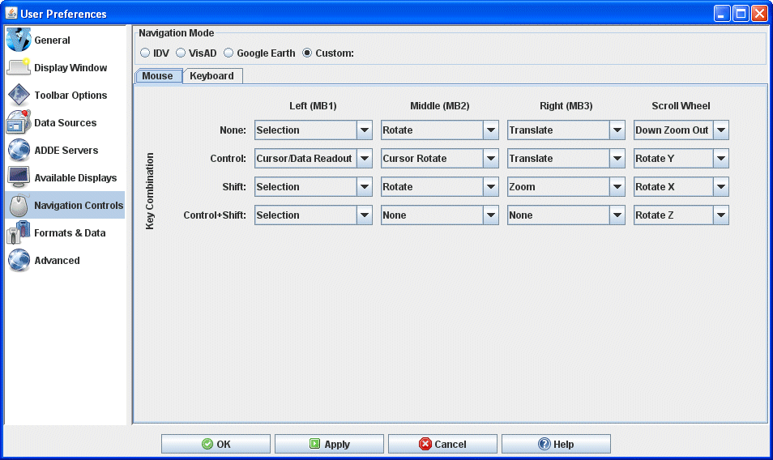
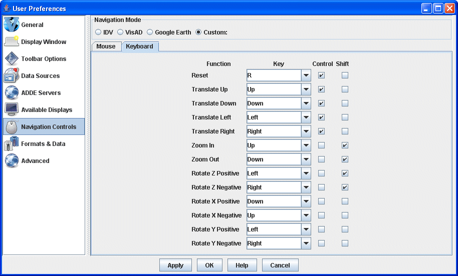

Navigation Controls Preferences
The User Preferences window is accessed in the Main Display window through the Edit->Preferences menu. The Navigation Controls tab allows the user to change how McIDAS-V
interprets mouse and keyboard events for navigating in 3D space. The user can choose to use the navigation defaults for the IDV, VisAD, Google Earth, or create their custom navigation settings. The below images represent the default Custom settings for the mouse and keyboard in the Navigation Controls tab.

Image 1: Mouse Navigation Controls (Default)

Image 2: Keyboard Navigation Controls (Default)
Properties
- Function - This is how McIDAS-V interprets mouse and keyboard events for navigating in 3D space. The functions for each key combination can be changed in the dropdown boxes in the Mouse tab, and are listed in the Function column of the Keyboard tab. The available functions are listed below.
- None - Will not perform any tasks when the key combination on the mouse or keyboard is performed.
- Rotate - Rotates the display. While most useful in the globe projection, it can be used at any time. If Rotate is followed by X, Y, or Z, that is the axis the display will rotate about. If there are no letters proceeding rotate, then the user can rotate the image about any axis. Negative and positive denote the direction that the image will rotate.
- Zoom - Zooms in to magnify a specific portion of the display, or zooms out to get a broader view. On the scroll wheel, Down Zoom In means if you scroll down, the image will be magnified at the center of the display, while scrolling up will zoom out. The opposite is true for Down Zoom Out.
- Translate - Shifts the entire image in any direction with respect to the stationary background.
- Selection - Moves selector points in displays when no keys are pressed or when Ctrl is pressed. Creates a rubber band zoom box when pressing the Shift key or Ctrl+Shift.
- Cursor/Data Readout - Probes the data. Information of latitude/longitude and other variables plotted on the map will be displayed at the location your cursor is centered over the image.
- Key Combination - Mouse and keyboard key combinations can be defined to perform the above functions in McIDAS-V. The available keys are listed below.
- None - With None selected, it is not necessary to hold down a key while pressing your defined key or mouse click for a given function.
- Control - The Control key must be held down while pressing your defined key or mouse click for a given function.
- Shift - The Shift key must be held down while pressing your defined key or mouse click for a given function.
- Ctrl+Shift - The Control and Shift keys must be held down while pressing your defined key or mouse click for a given function.
- Left (MB1) - The left mouse button must be held down while pressing your defined key for a given function.
- Middle (MB2) - The middle mouse button must be held down while pressing your defined key for a given function.
- Right (MB3) - The right mouse button must be held down while pressing your defined key for a given function.
- Scroll Wheel - The scroll wheel must be scrolled down or up while pressing your defined key for a given function.
- Key - The keyboard key must be held down while pressing your defined key for a given function.